Eso es el modelo básico para la flor con globos que es las más extendida. Ahora, básico no significa necesariamente fácil.
Todas las técnicas básicas usadas para criar este modelo han sido vistos en los tutoriales anteriores: sin embargo, el truco que le permite criar 6 pétalos con un sólo gesto requerirá probablemente algún tiempo para acostumbrarse y algunas sesiones de práctica.
Entonces al principio, quizás quiera inflar el globo más bien menos que más, para hacerte la vida más fácil.
1- Inflar un globo hasta el final, luego dejar escapar un poco de aire antes de hacer un nudo, para que el globo sea más blando y maleable.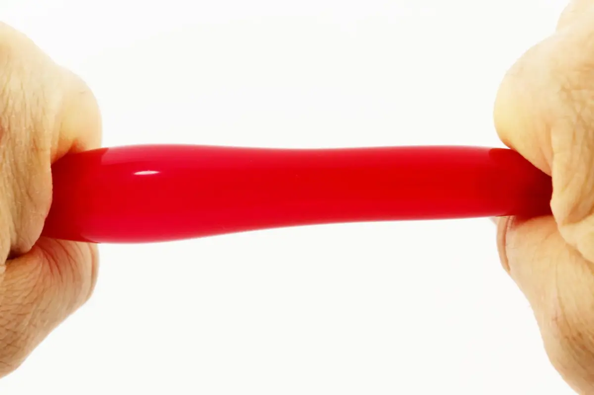2- Asegurarse de que la presión del aire este bien equilibrada en todo el globo.3- Coger la punta del globo y presiónalo...4- para echar un poco de aire hacia atrás, a fin de recuperar una longitud corta de latex. 5- Llevar ambos extremidades del globo juntos.6- Atar ambos extremidades del globo juntos para formar un gran bucle.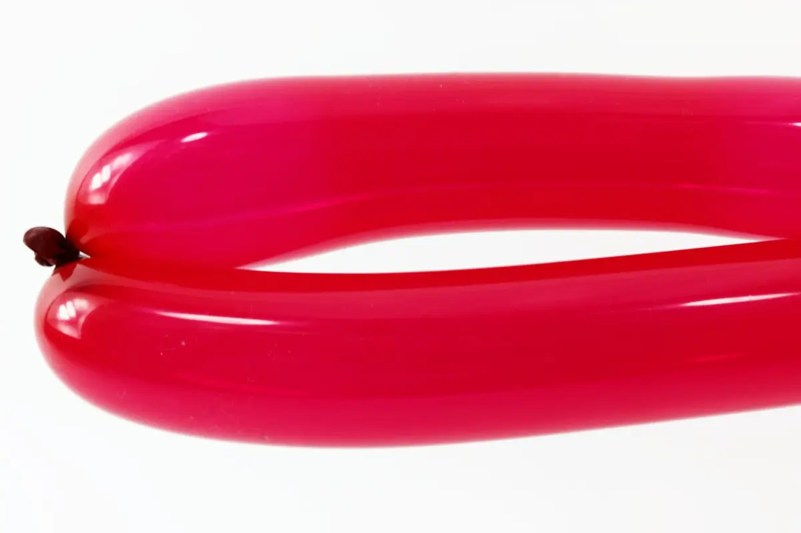7- LLevar cada lado del bucle plano contra el otro.8- Encontrar el medio del bucle, frente al nudo, y formar un doblez.9- Hacer dos grandes burbujas al nivel de este doblez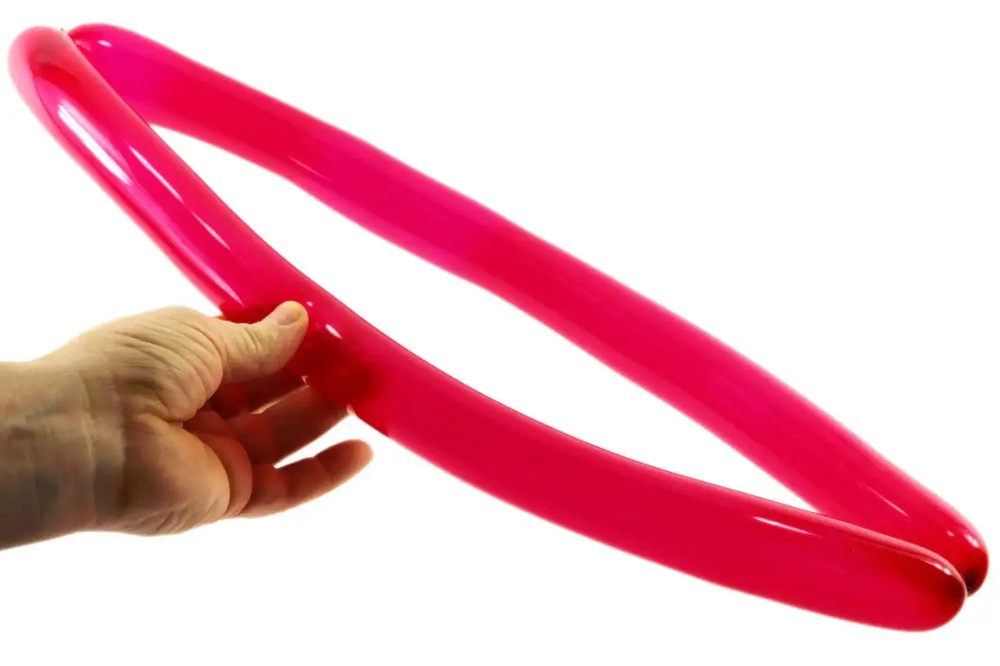10- Debería obtener esta forma. La proxíma parte será un poquito más compleja; es probable que tendrías que intentar varias veces antes de pillar el truco.11- Coger las grandes burbujas juntas en tus manos, dividiendo su longitude en tres partes más o menos iguales. Alternando cada mano, hay que precionar y torcer ambos segmentos alrededor de su base como si estuvieras haciendo burbujas normales.12- Sólo aqui, están haciendo dos burbujas a la vez, además sus manos no se muevan totalemente libre, dado que están trabajando más o menos al mismo tiempo en dos partes diferentes del globo.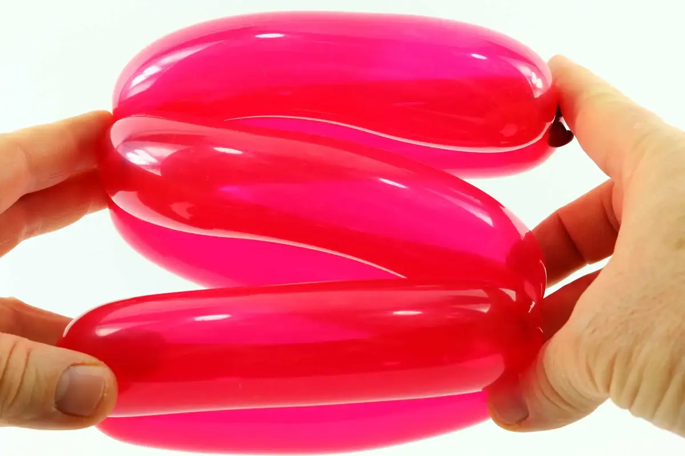13- Una vez que las burbujas están formadas a su satisfacción, Colocarlas en forma de zigzag, de esta manera.14- Mantener una extremidad en su sitio con su mano de mantenimiento.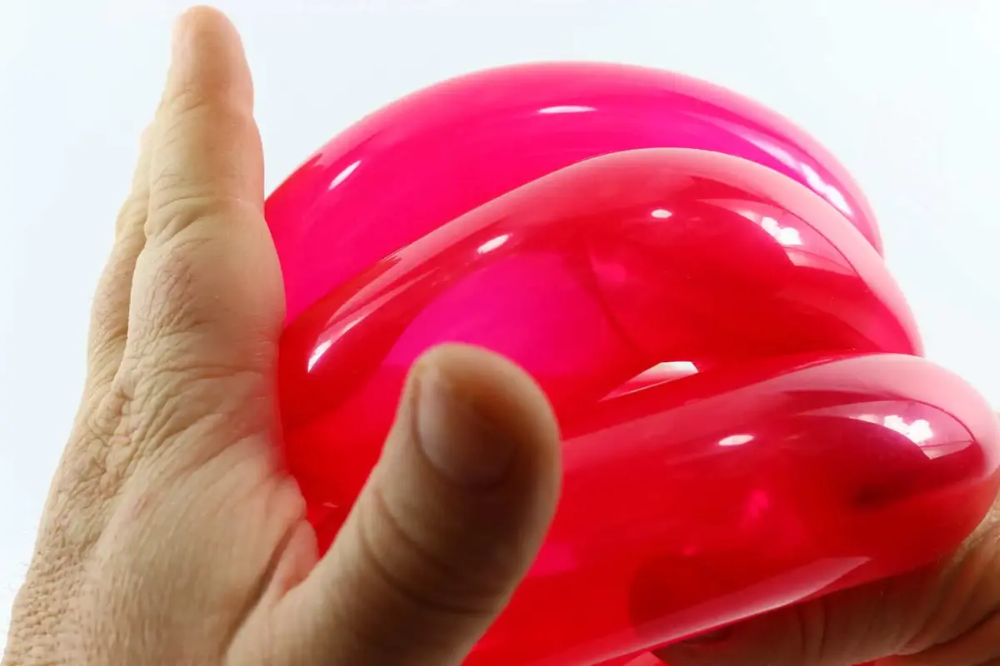15- Comprimir la otra extremidad con su mano de doblar.16- Aqui la idea es de juntar los dobleces de la burbuja juntos, de este modo doblar todas las 6 burbujas y convertirlas en pequeños bucles (esos serán los pétalos de la flor).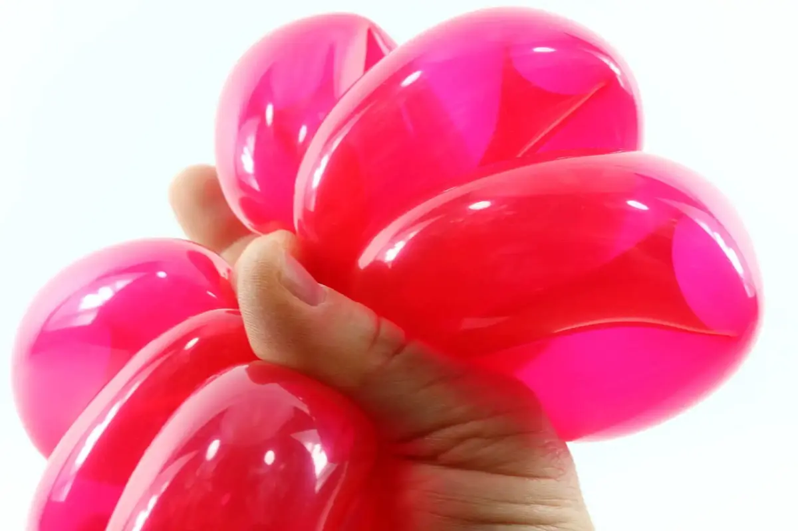17- Ultimamente, la mano de mantenimiento deberá agarrar todos los dobleces entre su pulgar y su indice y ser capaz de mantener todas las 6 burbujas por si misma. Es un poco físico, pero es posible después de varios intentos.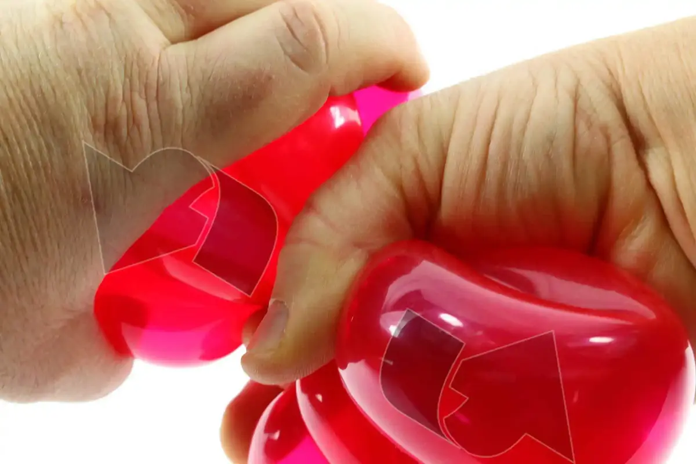18- Con la mano de doblar, coger los 3 bucles de una extremidad, y doblarles juntos en la base de los dobleces mantenidos en la mano de mantenimiento.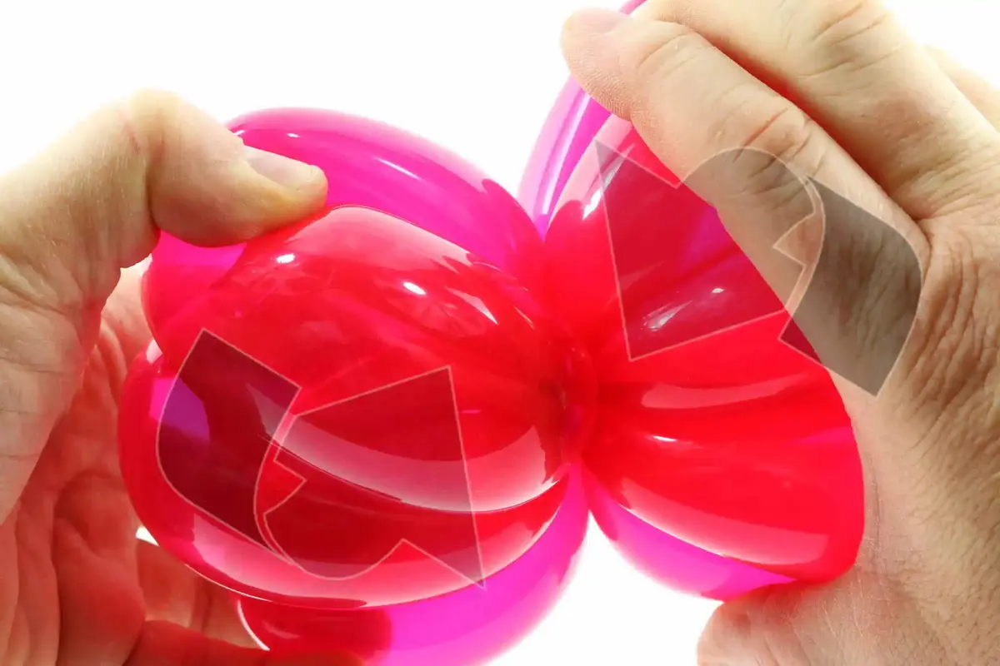19- Dar vueltas varias veces hasta que los petalos se apoyen a todos mutualmente en su sitio.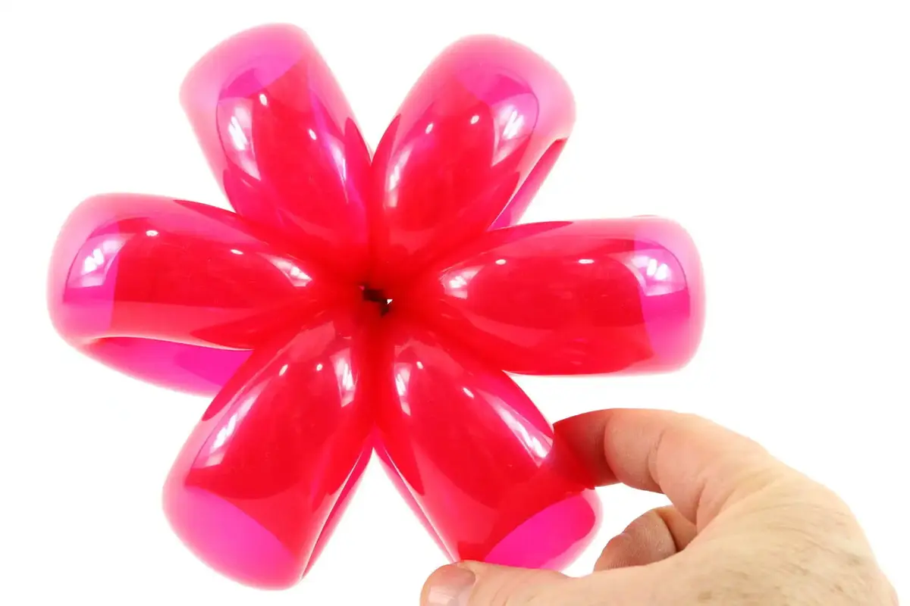20- Los petalos están hechos, ahora vamos a trabajar en el tallo.21- Para hacer el tallo, inflar un globo, de preferencia un verde, dejando una margen de aproximadamente 3 dedos de ancho.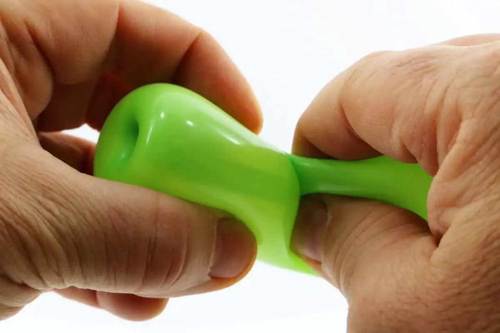22- Empezar por hacer una torcedura de tulipán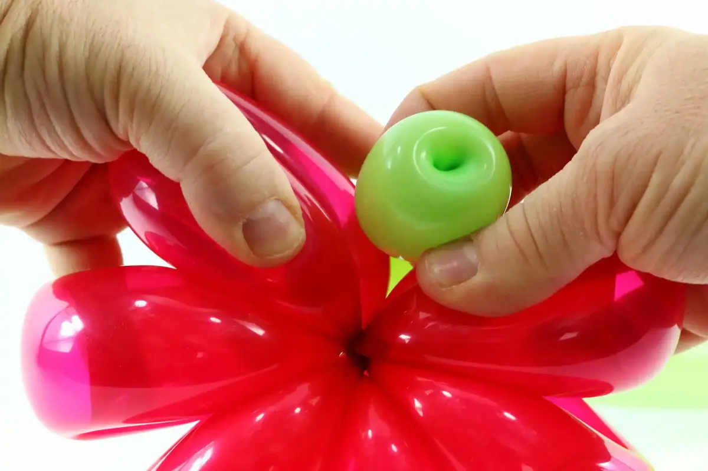23- Separar cualquiera de 2 petalos para inserir el doblez del torcedura de tulipán entre si.24- Para bajar la presión y evitar que el globo explota, necesita inserir con cuidado la torcedura de tulipán hacia adelante con varios movimientos circulares, en vez de forzarlo directamente a través de una vez.25- Dar la vuelta al flor y hacer la misma cosa con el resto del globo, para que la parte baja del tallo esté también localizada justo al centro de los petalos.26- Hacer dos burbujitas una traz otra.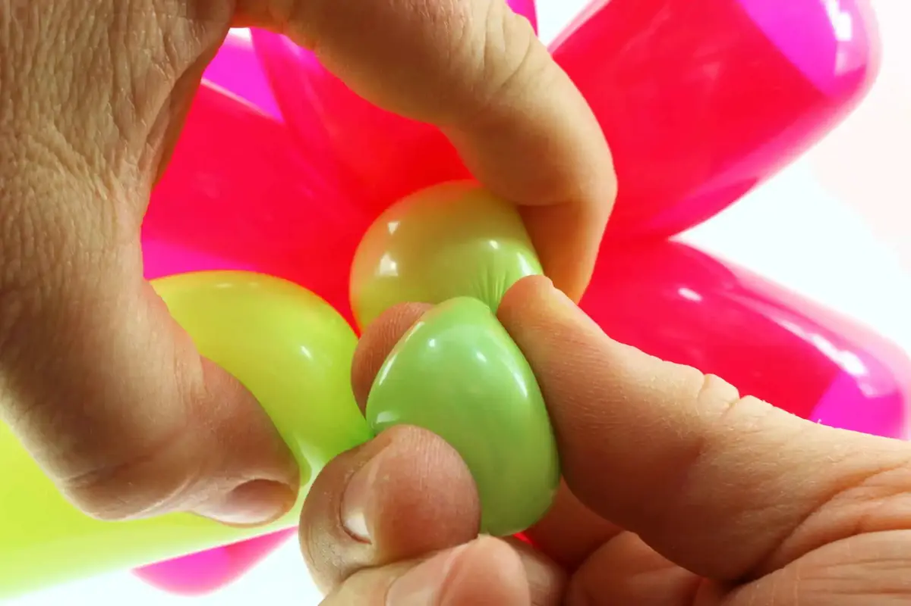27- Convertir la segunda burbuja en una torcedura de oreja.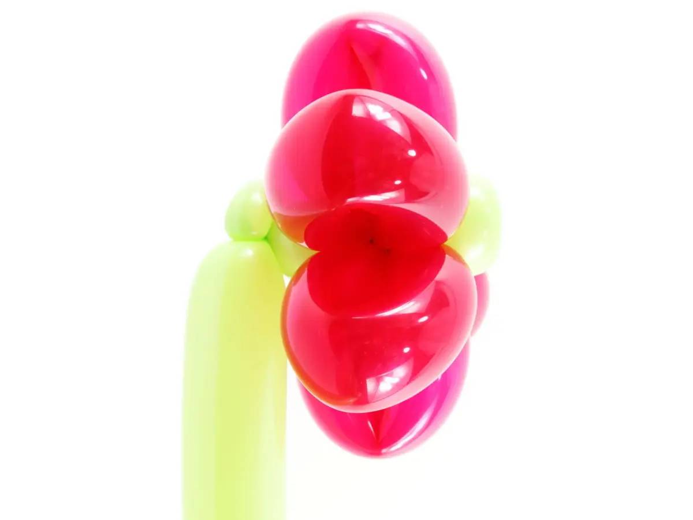28- La idea es de tener el tallo más o menos en el mismo alineamento que los petalos de la flor.29- Echar el aire hasta la extremidad de la parte que queda del globo y asegurarse de que la presión del aire está distribuida uniformamente por toda su longitud.30- Doblar la parte que queda del globo en un zigzag. La punta puede pegar por fuera del zigzag.31- Presionar et bloquear el medio del zigzag en sitio y torcer ambos lados del zigzag en direcciones contrarias. Esto nos da, en un sólo movimiento, dos bucles de longitud igual que formarán los petalos de la flor.32- Torcer la parte superior del tallo un poquito para darla una forma más natural.33- Hacer lo mismo con la parte baja del tallo.¡Ya está! ¡Hasta pronto! Para otra lección... con Môssieur Ballon!